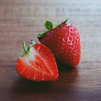
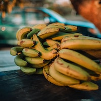
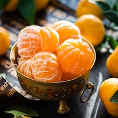
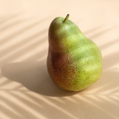
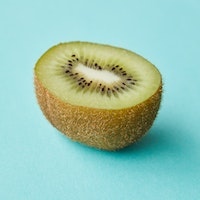
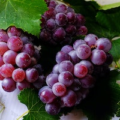
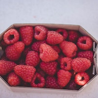

Jagoda
Jagoda je vrsta bobičastog voća koje je obično crvene boje. Ona je
ovalnog oblika i ima glatku, sjajnu kožicu. Unutar jagode se nalazi
sočno meso koje je slatko i ukusno. Sredina jagode sadrži malene žute
sjemenke koje su jestive, ali ih ljudi obično izbjegavaju jesti zbog
teksture. Jagode su poznate po svom svježem i slatkom okusu, ali se
također koriste u mnogim drugim jelima kao što su pite, kolači,
sladoledi, voćne salate i smoothieji. One su bogate vitaminom C,
vlaknima i antioksidantima, a također su niskokalorične pa su idealne
za dijete.
07.03.2022

Banana
Banana je vrsta voća koja je ovalnog oblika, obično žute boje kore s
bijelim mesom unutar kore. Banane su bogate vlaknima, vitaminima i
mineralima, kao što su vitamin C, vitamin B6, kalij, magnezij i folna
kiselina. One su također dobar izvor ugljikohidrata i prirodni
zaslađivač. Banane se često konzumiraju sirove, ali mogu se koristiti
i za pripremu različitih jela, kao što su smoothiji, palačinke ili
kolači.
07.03.2022

Mandarina
Mandarina je mala citrusna voćka sferičnog ili blago spljoštenog
oblika, koja obično ima svijetlu narančastu kožu koja se lako ljušti.
Unutar kore, mandarina ima sočno meso koje je slatko i aromatično, a
koje je obično podijeljeno na male segmente. Mandarine su bogate
vitaminom C, antioksidansima i vlaknima, a također sadrže i vitamine A
i B. Mandarine se često konzumiraju svježe, ali se mogu koristiti i za
pripremu različitih jela, poput salata, slatkiša, pekmeza ili umaka.
Mandarine su popularne tijekom zime kada su dostupne kao sezonsko
voće.
07.03.2022

Kruška
Kruška je voće ovalnog ili kruškolikog oblika, koje obično ima glatku
tanku kožu koja može biti žute, zelene, smeđe ili crvene boje, ovisno
o sorti. Unutar kore, kruška ima sočno, slatko i mirisno meso koje je
bijele do kremaste boje. Kruške su bogate vlaknima, vitaminom C i K,
kalijem i drugim važnim mineralima. One se često konzumiraju svježe,
ali se također mogu koristiti za pripremu različitih jela, kao što su
kolači, umaci, kompoti ili pekmezi. Kruške su dostupne tijekom jeseni
i zime, kada su sezonsko voće.
07.03.2022

Kivi
Kivi je tropsko voće poznato po svom slatkastom i osvježavajućem
okusu. Oblik mu je ovalan i veličina varira od oko 5 do 8 centimetara
u dužinu. Vanjska koža kivija je smeđa i prekrivena malim dlačicama,
dok je unutrašnjost voća zelena, sočna i prepuna malenih crnih
sjemenki. Kivi je izvrstan izvor vitamina C, kalija i vlakana, te se
često koristi u pripremi voćnih salata, sokova, smoothija i drugih
ukusnih jela.
07.03.2022

Grožđe
Grožđe je jedno od najpoznatijih i najpopularnijih voća koje se uzgaja
širom svijeta. To je bobičasto voće koje raste na lozama, a dolazi u
različitim sortama i bojama. Obično se grožđe koristi za konzumiranje
sirovo kao voće ili se koristi za proizvodnju vina, soka, džema i
drugih proizvoda. Boja grožđa varira od zelene, preko crvene, pa sve
do tamnoljubičaste boje. Grane grožđa su tanke, a plodovi su obično
okrugli ili ovalni. Njihova veličina također varira ovisno o sorti i
klimatskim uvjetima u kojima se uzgaja.
07.03.2022

Malina
Malina je voćka iz porodice ruža. Listovi maline su tamnozeleni, sa
zupcima duž ivica, a grane su šiljate i bodljikave. Maline rastu kao
grmovi koji mogu narasti do visine od 1,5 metara. Plodovi maline su
sitni i jarko crvene boje, obično okrugli ili blago izduženi, s malim
sjemenkama unutar. Imaju slatkast, osvježavajući okus i često se
koriste u desertima, džemovima, sokovima i drugim prehrambenim
proizvodima. Malina je vrlo hranjiva, bogata vitaminima i mineralima,
poput vitamina C, mangana i kalija. Također se koristi u alternativnoj
medicini zbog svojih potencijalnih ljekovitih svojstava, uključujući
protuupalna i antioksidativna svojstva.
07.03.2022